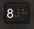
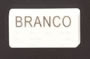
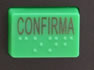

SEU VOTO PARA
VEREADOR
NOME: Ricardo
ENDEREÇO
PARTIDO
FILIAÇÃO
ENDEREÇO
PARTIDO
FILIAÇÃO
 Presidente
Presidente
 Vice-Presidente
Vice-Presidente
Aperte a tecla:
CONFIRMA para CONFIRMAR este voto
CORRIGE para REINICIAR este voto
CONFIRMA para CONFIRMAR este voto
CORRIGE para REINICIAR este voto







